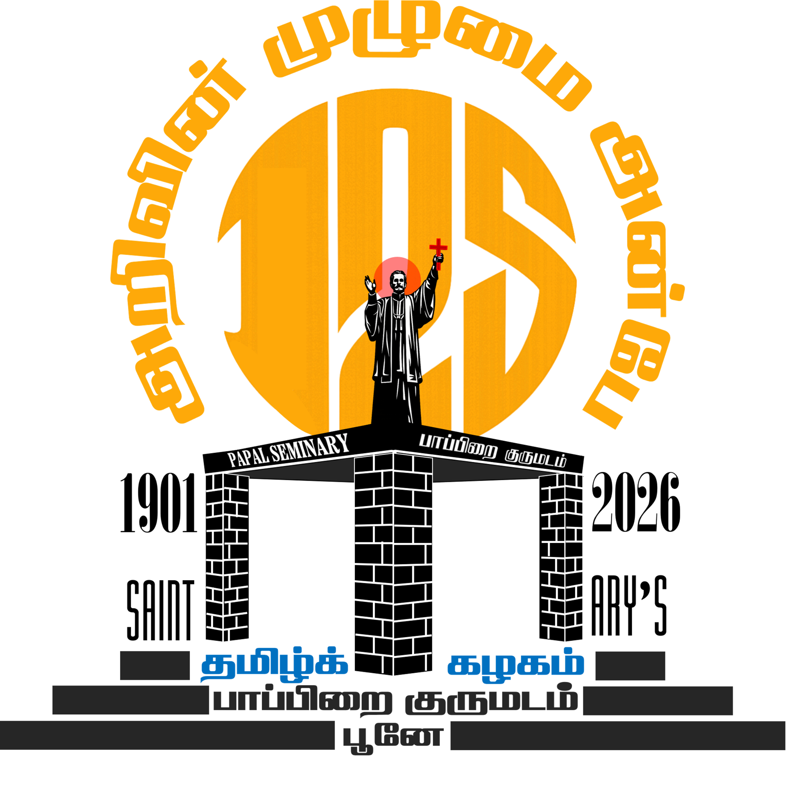

1901 – 2026 • 125-ஆம் ஆண்டு நிறைவு விழா • 125th Anniversary

தூய மரியன்னை தமிழ்க் கழகம்
St. Mary’s Tamil Academy • Papal Seminary, Pune
“அன்பிலும் அறிவிலும் வளர” — To Grow in Love and Wisdom

“அன்பிலும் அறிவிலும் வளர” — To Grow in Love and Wisdom